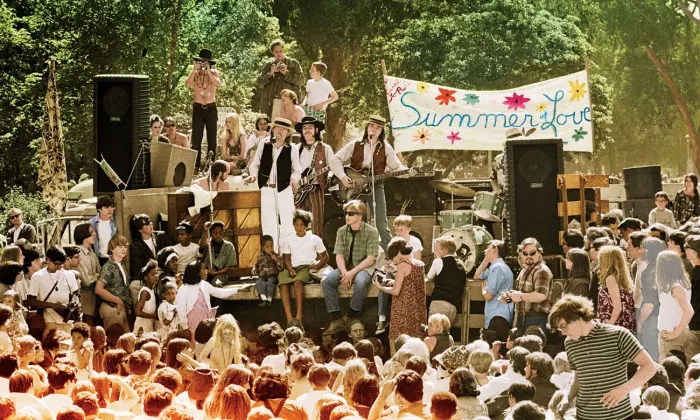

Flores contra fuzis: a revolução hippie desafia o mundo

No coração da Guerra Fria e sob a sombra do recrutamento para o Vietnã, uma geração de jovens nascidos no pós-guerra decidiu que não queria herdar o mundo dos pais. No bairro de Haight-Ashbury, em São Francisco, formou-se o epicentro de um movimento que pregava paz, amor livre e a rejeição do consumismo americano.
O auge chegou no chamado "Verão do Amor", em 1967, quando milhares de jovens de todo o país convergiram para a cidade, vestidos de cores vivas, flores no cabelo e violões na mão. Comunidades alternativas, experiências com substâncias psicodélicas e uma nova música — psicodélica, livre, barulhenta — davam forma a um estilo de vida que rejeitava hierarquias, fronteiras e guerras.
Em Haight-Ashbury, a revolução não usava uniforme: usava flores no cabelo.

O movimento atingiu seu ponto mais alto simbólico em 1969, no festival de Woodstock, que reuniu cerca de 400 mil pessoas em três dias de música e comunhão. Mas o sonho começou a desmoronar quase tão rápido quanto nasceu: o uso excessivo de drogas, a violência registrada em eventos como o festival de Altamont e a absorção comercial da estética hippie pelo mercado de moda esvaziaram boa parte de seu ímpeto original já no início dos anos 1970.
Mesmo assim, o legado permaneceu. Bandeiras do movimento ambiental, da alimentação natural, da liberdade sexual e de novas formas de espiritualidade seguem, até hoje, devendo sua origem àquela geração que, por um breve momento, tentou substituir as armas por flores.